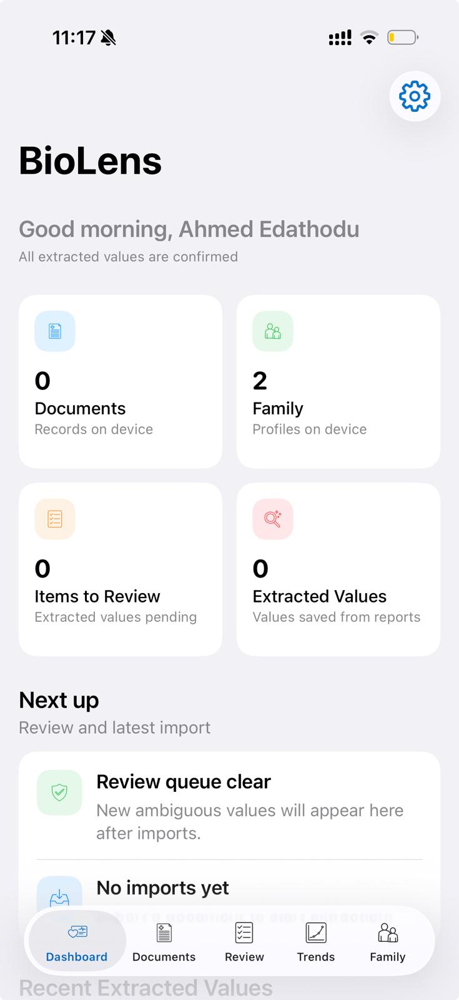
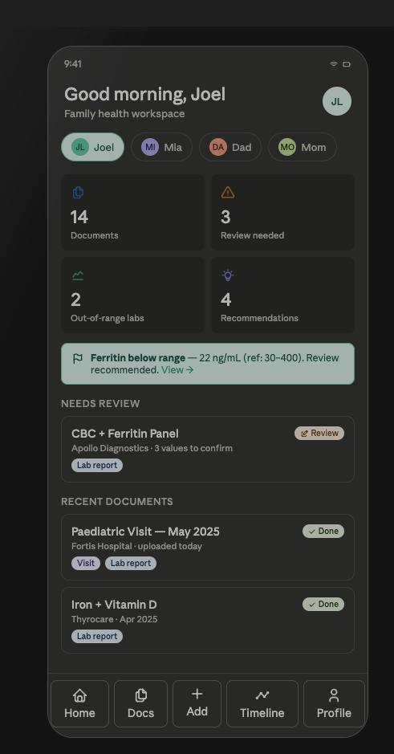
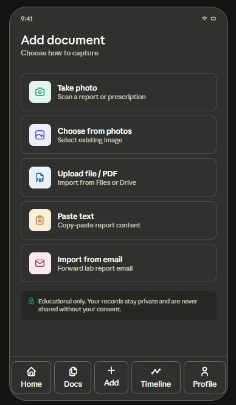
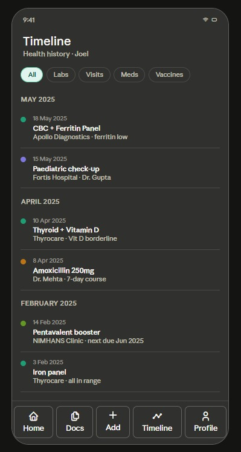
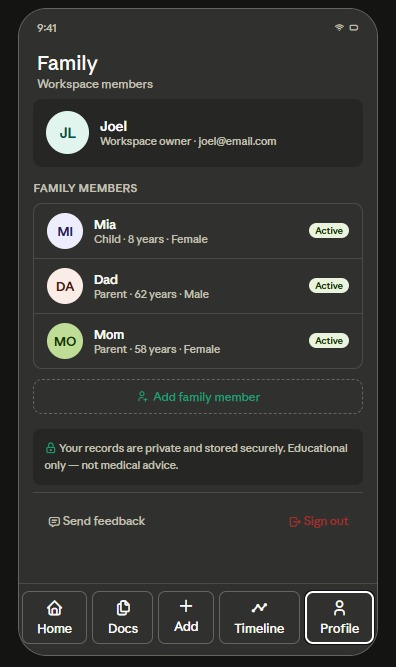

Upload reports
Users can add lab reports by photo, file upload, PDF import, pasted text, or email forwarding.
Klario
Klario is a medical report tracking app that helps users upload reports, parse results, follow biomarker changes, and understand their health data over time.
Instead of sorting through stacks of old blood tests, Klario keeps reports, charts, timelines, and family records in one place.

Early prototype screens from the iOS app. Some screenshots still show the earlier BioLens name, but the product is now Klario.





The web app should make the same core product visible from a browser: upload reports, review extracted data, track biomarkers, and manage family records.
Users can add lab reports by photo, file upload, PDF import, pasted text, or email forwarding.
Klario turns repeated test results into charts so users can see when a value started moving up or down.
Out-of-range labs and ambiguous extracted values can be placed into a review queue before they are saved.
Plain-language explanations help users understand what a record means and why it may matter.
Users can manage records for parents, children, partners, and pets from one account.
A timeline keeps reports, visits, medications, vaccines, and lab panels in chronological order.